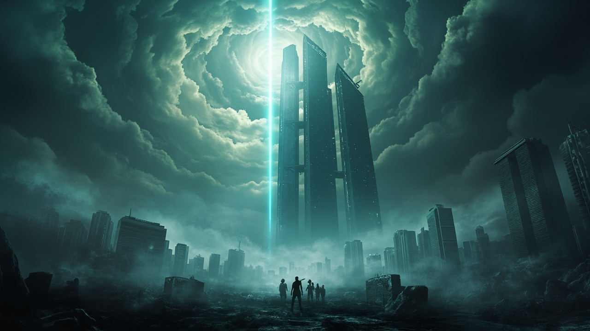

序章
我站在比邻星的轨道边缘，凝望那颗金黄色的恒星，它的光芒柔和却陌生，像是母亲的低语，却又带着异域的冷漠。地球已经在这颗新太阳的怀抱中安顿了半个世纪，我的骨头开始老化，关节在低温下吱吱作响，但心底那股炽热的记忆——关于流浪、关于牺牲、关于太阳的最后闪耀——却从未冷却。
我是那个在刹车时代出生的孩子，那个在地球引擎的光柱下长大的少年，那个目睹太阳化作红巨星的幸存者。如今，我是地球上为数不多的"流浪世代"之一，活得太久，久到见证了人类从绝望到希望的轮回，也久到开始怀疑，这一切是否值得。
